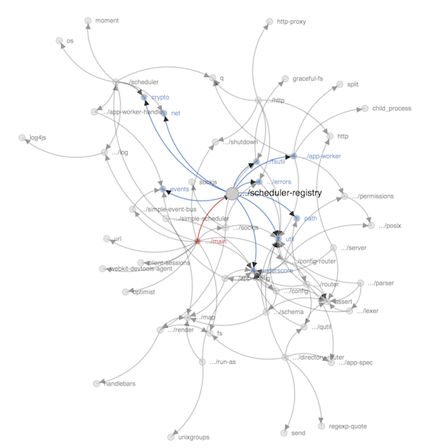

A tool to visualize and report on dependencies in NodeJS projects.
A tool to visualize and report on dependencies in NodeJS projects.

Pending. Will likely put on npm eventually. For now, you'll need to clone the repo then run npm install.
git clone https://github.com/trestletech/moduler.git
cd moduler
sudo npm install -g
Then the moduler command should be available system-wide.
There current options include:
-d <dir> the directory containing the node files you want to process.-h If not present, export the dependency graph as raw JSON. If present, export an HTML file wrapping that JSON which visualizes the graph using d3.-o <outputFile> If present, will direct the output to the given file name.
The following would generate an HTML file containing the d3 visualization of the dependency graph of the JavaScript files contained in the "lib" directory.
moduler -d ./lib/ -h -o "index.html"
walk call.The MIT License (MIT)
Copyright (c) 2013 Trestle Technology, LLC.
Permission is hereby granted, free of charge, to any person obtaining a copy of this software and associated documentation files (the "Software"), to deal in the Software without restriction, including without limitation the rights to use, copy, modify, merge, publish, distribute, sublicense, and/or sell copies of the Software, and to permit persons to whom the Software is furnished to do so, subject to the following conditions:
The above copyright notice and this permission notice shall be included in all copies or substantial portions of the Software.
THE SOFTWARE IS PROVIDED "AS IS", WITHOUT WARRANTY OF ANY KIND, EXPRESS OR IMPLIED, INCLUDING BUT NOT LIMITED TO THE WARRANTIES OF MERCHANTABILITY, FITNESS FOR A PARTICULAR PURPOSE AND NONINFRINGEMENT. IN NO EVENT SHALL THE AUTHORS OR COPYRIGHT HOLDERS BE LIABLE FOR ANY CLAIM, DAMAGES OR OTHER LIABILITY, WHETHER IN AN ACTION OF CONTRACT, TORT OR OTHERWISE, ARISING FROM, OUT OF OR IN CONNECTION WITH THE SOFTWARE OR THE USE OR OTHER DEALINGS IN THE SOFTWARE.